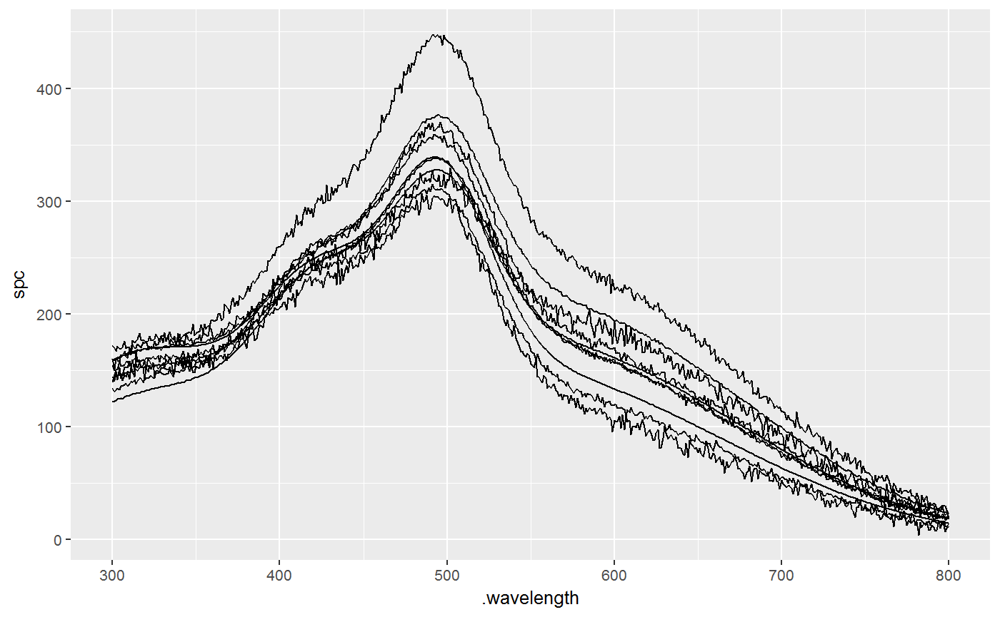

aes_sp.RdConvenience functions that automatically map default
ggplot2 aesthetics and enamble easy plotting of
hyperSpec object with ggplot2.
Default values of aesthetics are
x = ".wavelength",
.
y = "spc",
group = ".rownames"
These functions can be used with in combination with
as.long.df and its wrapper ldf
that is more convenient for plotting.
aes_sp(...) aes_sp_string(...) aes_sp_(...)
| ... | List of name value pairs giving aesthetics to map to variables.
See |
|---|
Parameters entered to aes_sp, aes_sp_ or
aes_sp_string update and modify the list of mapped aesthetics.
If default aesthetic (x, y, or group) has to be changed or removed,
it shoud be done explicitly, e.g., aes_sp(x = NULL).
See examples below.
aes_sp accepts unquoted variable names. It is alternative
to aes()
aes_sp_string requires explicitly quoted variable names
with "". It is alternative to
aes_string()
aes_sp_ is alias to aes_sp_string.
aes_sp()#> Aesthetic mapping: #> * `group` -> `.rownames` #> * `x` -> `.wavelength` #> * `y` -> `spc`## * group -> .rownames ## * x -> .wavelength ## * y -> spc # To add aesthetics: aes_sp(color = length)#> Aesthetic mapping: #> * `group` -> `.rownames` #> * `x` -> `.wavelength` #> * `y` -> `spc` #> * `colour` -> `length`## * group -> .rownames ## * x -> .wavelength ## * y -> spc ## * colour -> length # To remove defaul values of aesthetics, do it expicitly: aes_sp(x = NULL)#> Aesthetic mapping: #> * `group` -> `.rownames` #> * `y` -> `spc`## * group -> .rownames ## * x -> .wavelength # To use `aes_sp` in combination with function `ldf`: ggplot(ldf(Spectra2[1:10]), aes_sp()) + geom_line()